최신 CARD-FLOW 영문 현지화
별도 검토 초안 · 사용자 승인 전 · 커밋·푸시 없음
국문 문구·레이아웃 보존. 원본과 이전 초안은 수정하지 않았습니다.
국문 최신 버전에 맞춘 영문 10장입니다. 특히 4번 제조번호 대조, 7번 한 장 안의 제출 예외, 9번 문서 예시를 함께 맞췄습니다. 두 영문 버전은 동일 Chromium에서 1080×1350으로 렌더했습니다. 각 장의 펼침 메뉴에서 최신 국문과 영문을 대조할 수 있습니다.
Card 1 · The factory tests. What does the brand do?
기존 영문 READABILITY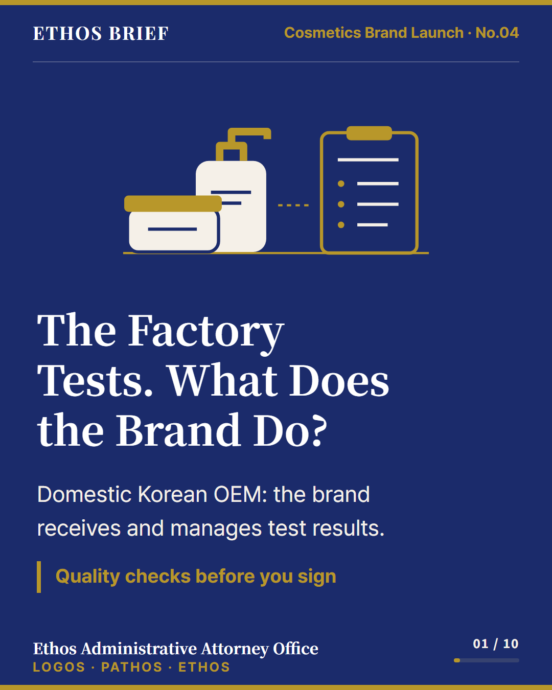
최신 CARD-FLOW 영문 초안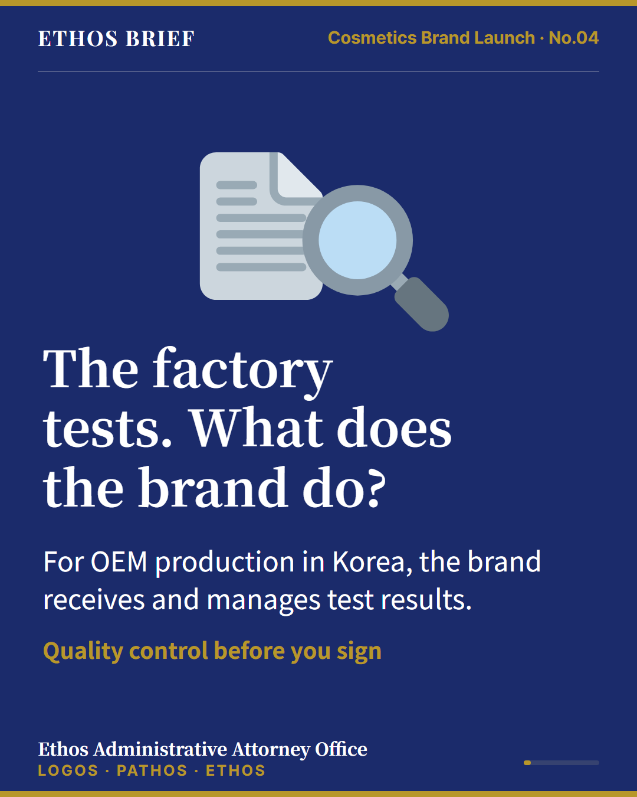
최신 국문과 문구 대조
| 국문 기준 | 영문 현지화 |
|---|
| 공장이 검사하면, 브랜드는 뭘 해야 할까요? | The factory tests. What does the brand do? |
| 서명 전에 확인할 품질관리 | Quality control before you sign |
| 국내 OEM, 브랜드는 검사결과를 받아 관리합니다. | For OEM production in Korea, the brand receives and manages test results. |
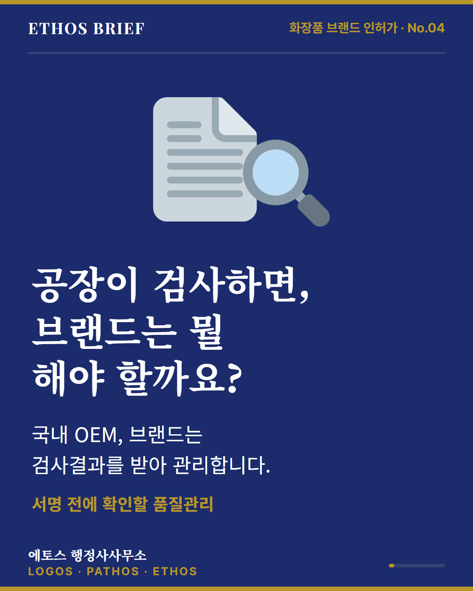
Card 2 · Know what each business must do
기존 영문 READABILITY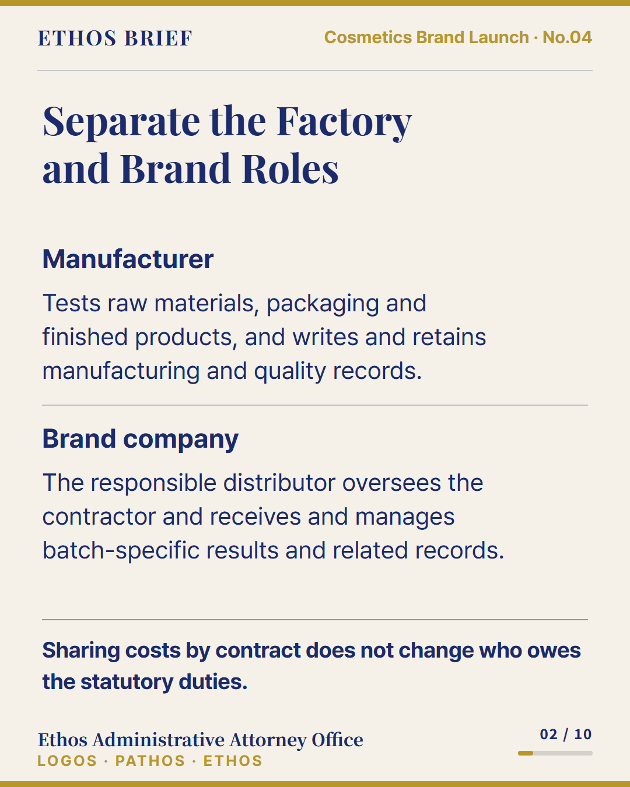
최신 CARD-FLOW 영문 초안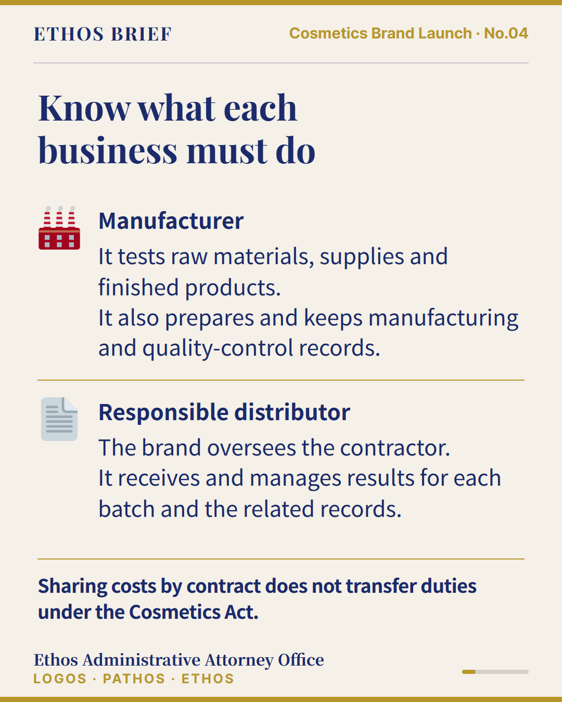
최신 국문과 문구 대조
| 국문 기준 | 영문 현지화 |
|---|
| 공장과 브랜드가 맡을 일을 나눠보세요 | Know what each business must do |
| 계약으로 비용을 나눠도 화장품법상 의무의 주체는 바뀌지 않습니다. | Sharing costs by contract does not transfer duties under the Cosmetics Act. |
| 제조업체 | Manufacturer |
| 원료와 자재, 완제품을 시험합니다. 제조·품질관리 기록도 작성해 보관합니다. | It tests raw materials, supplies and finished products. It also prepares and keeps manufacturing and quality-control records. |
| 책임판매업자 | Responsible distributor |
| 수탁자를 관리·감독합니다. 제조번호별 검사결과와 관련 기록을 받아 관리합니다. | The brand oversees the contractor. It receives and manages results for each batch and the related records. |
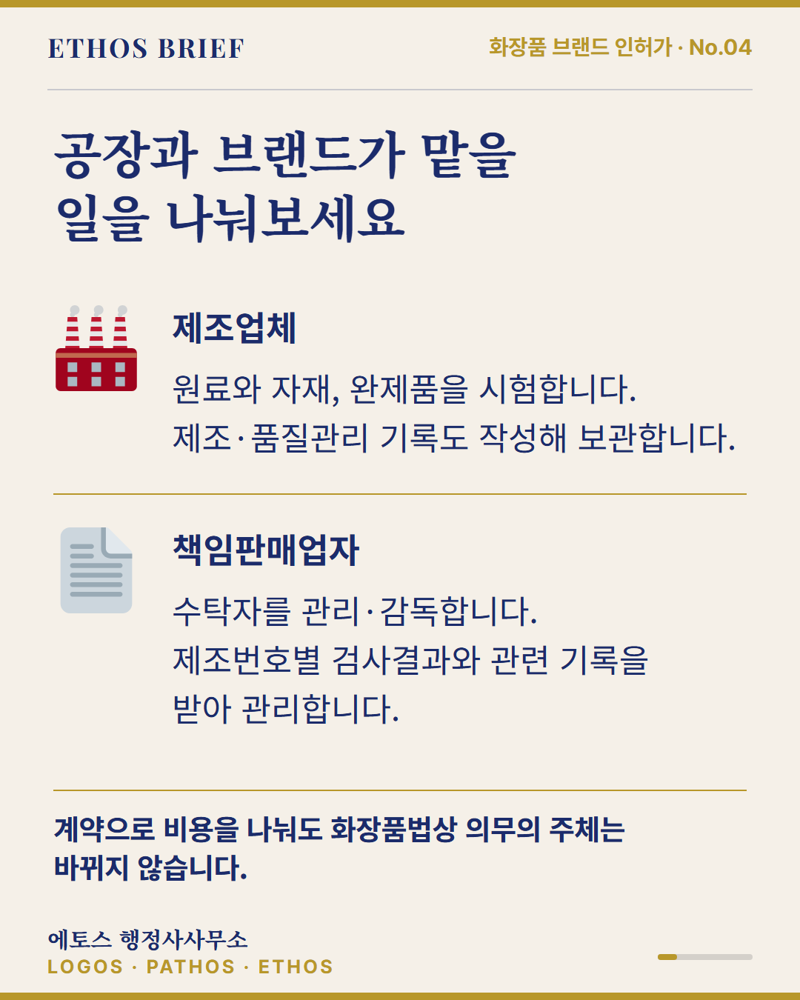
Card 3 · When may you skip a separate test?
기존 영문 READABILITY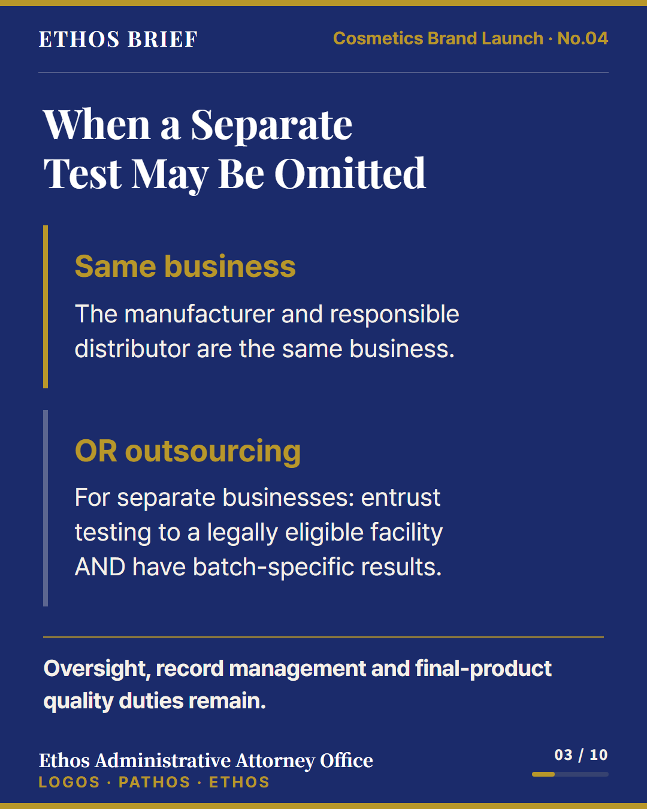
최신 CARD-FLOW 영문 초안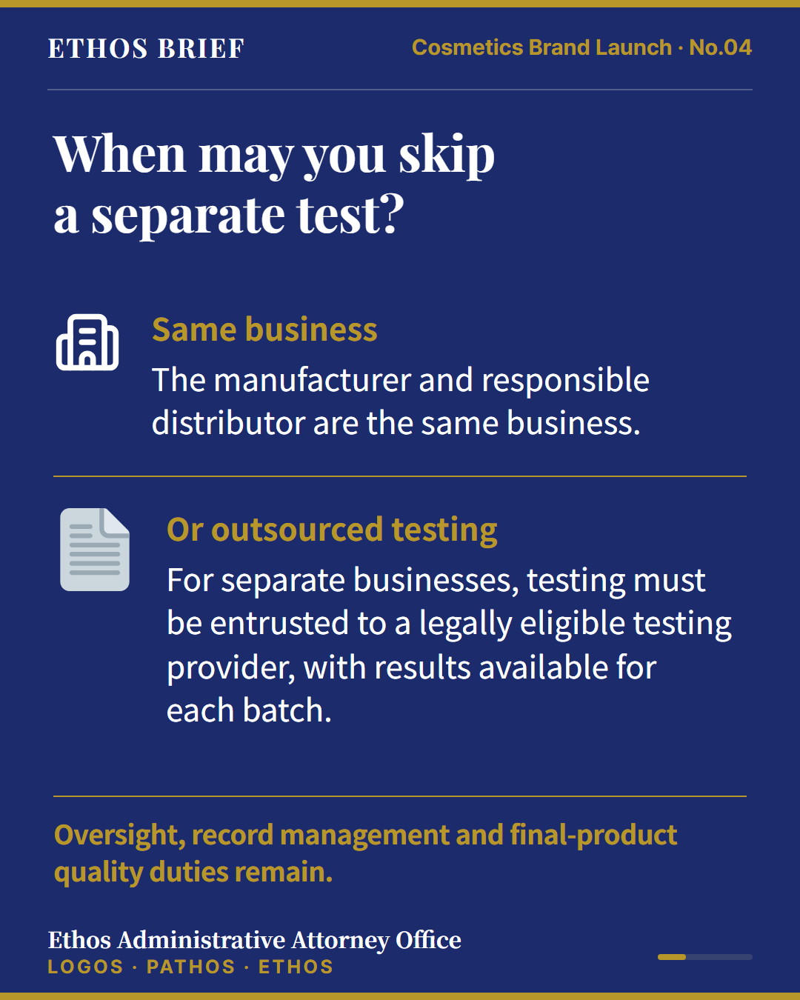
최신 국문과 문구 대조
| 국문 기준 | 영문 현지화 |
|---|
| 별도 검사를 하지 않을 수 있는 두 경우 | When may you skip a separate test? |
| 관리·감독, 기록 관리와 최종 제품 품질관리 의무는 남습니다. | Oversight, record management and final-product quality duties remain. |
| 같은 사업자 | Same business |
| 제조업자와 책임판매업자가 동일한 경우입니다. | The manufacturer and responsible distributor are the same business. |
| 또는 위탁 | Or outsourced testing |
| 별개 사업자라면 법정 요건을 갖춘 기관 등에 위탁하고 제조번호별 검사결과가 있어야 합니다. | For separate businesses, testing must be entrusted to a legally eligible testing provider, with results available for each batch. |
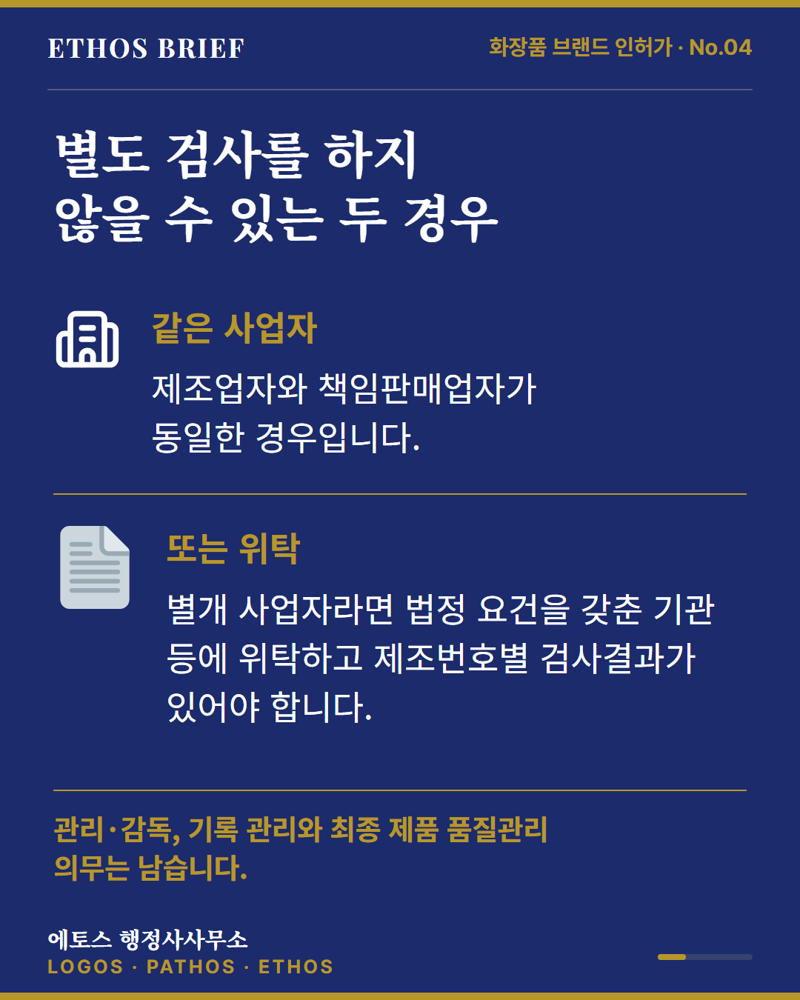
Card 4 · “Test complete”: check the delivery
구성도 최신 국문에 맞춰 변경했습니다. 이전과 같은 문구의 디자인만 비교하는 장이 아닙니다.
기존 영문 READABILITY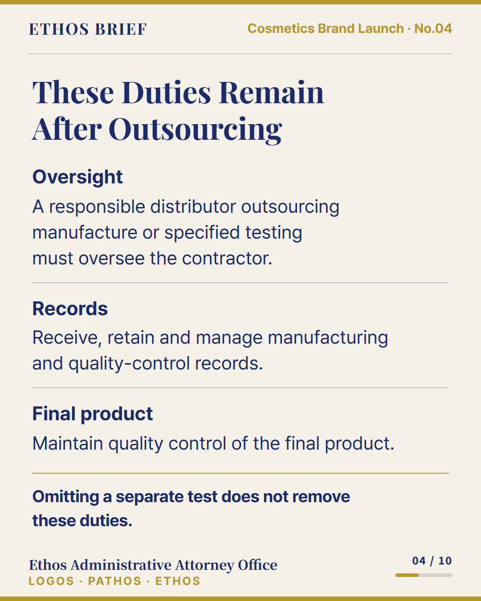
최신 CARD-FLOW 영문 초안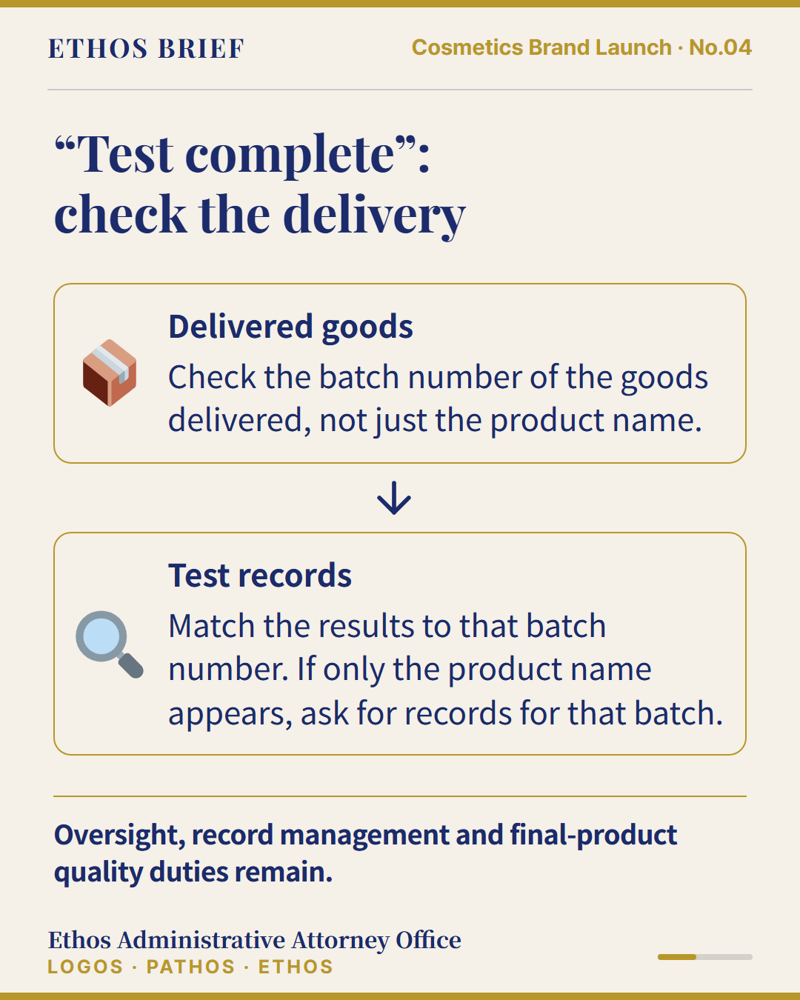
최신 국문과 문구 대조
| 국문 기준 | 영문 현지화 |
|---|
| ‘검사 완료’ 메일과 납품 상자를 대조하세요 | “Test complete”: check the delivery |
| 관리·감독, 기록 관리와 최종 제품 품질관리 의무는 남습니다. | Oversight, record management and final-product quality duties remain. |
| 납품 상자 | Delivered goods |
| 제품명뿐 아니라 납품받는 생산분의 제조번호를 확인합니다. | Check the batch number of the goods delivered, not just the product name. |
| 검사자료 | Test records |
| 그 제조번호의 검사결과인지 대조합니다. 제품명만 적혀 있다면 해당 생산분의 기록을 요청합니다. | Match the results to that batch number. If only the product name appears, ask for records for that batch. |

Card 5 · Agree how test records reach you
기존 영문 READABILITY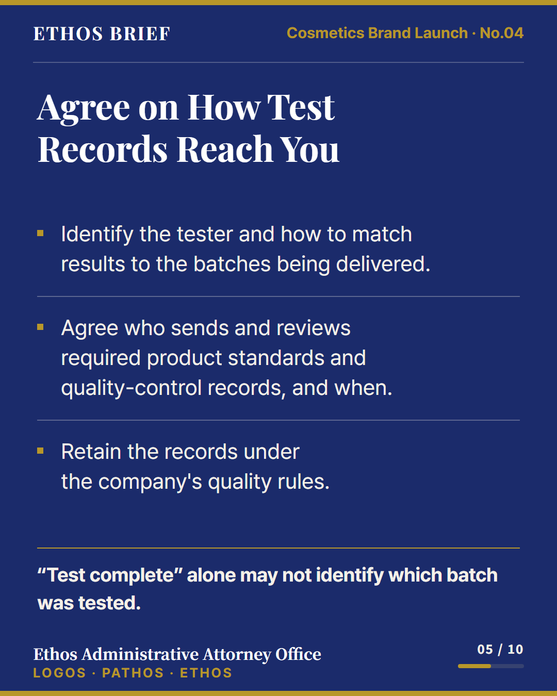
최신 CARD-FLOW 영문 초안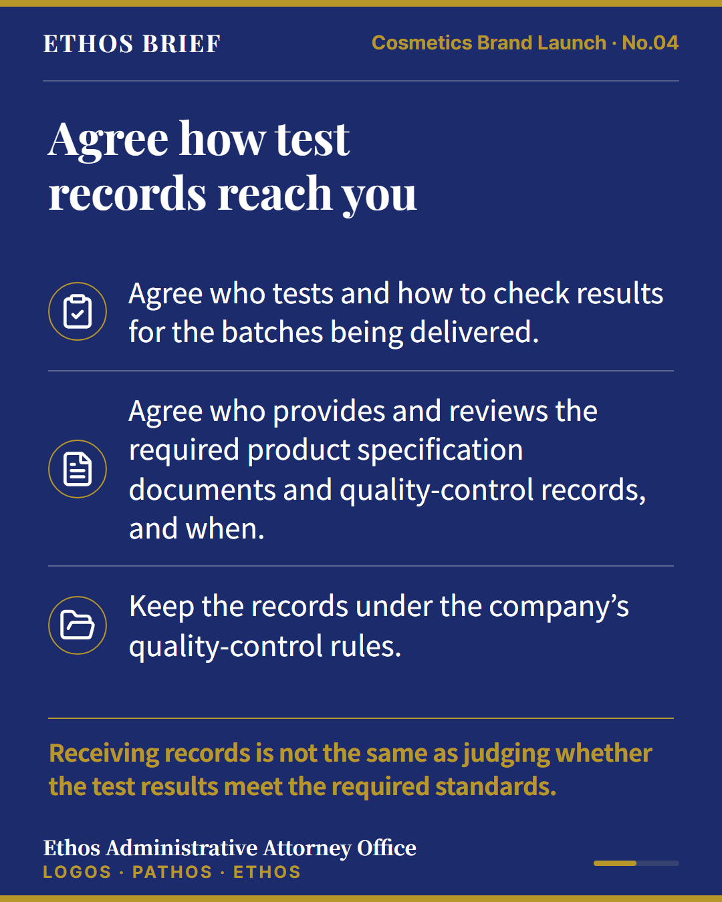
최신 국문과 문구 대조
| 국문 기준 | 영문 현지화 |
|---|
| 검사자료를 받는 흐름까지 정하세요 | Agree how test records reach you |
| 자료를 받았다는 사실과 검사결과가 적합하다는 판단은 구분합니다. | Receiving records is not the same as judging whether the test results meet the required standards. |
| 누가 검사하고, 납품받을 제조번호의 결과를 어떻게 확인할지 정합니다. | Agree who tests and how to check results for the batches being delivered. |
| 필요한 제품표준서·품질관리기록서를 누가 언제 제공하고 확인할지 맞춥니다. | Agree who provides and reviews the required product specification documents and quality-control records, and when. |
| 받은 기록은 회사 품질관리규정에 따라 보관합니다. | Keep the records under the company’s quality-control rules. |
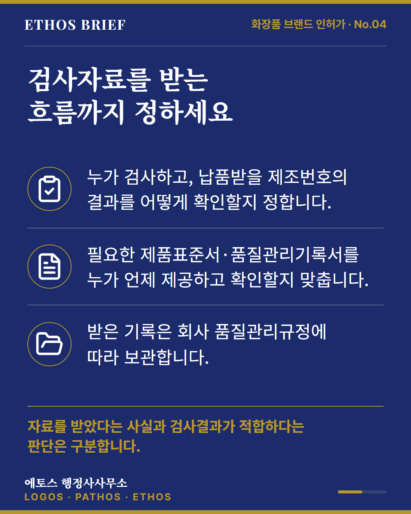
Card 6 · What if the approved specifications change?
기존 영문 READABILITY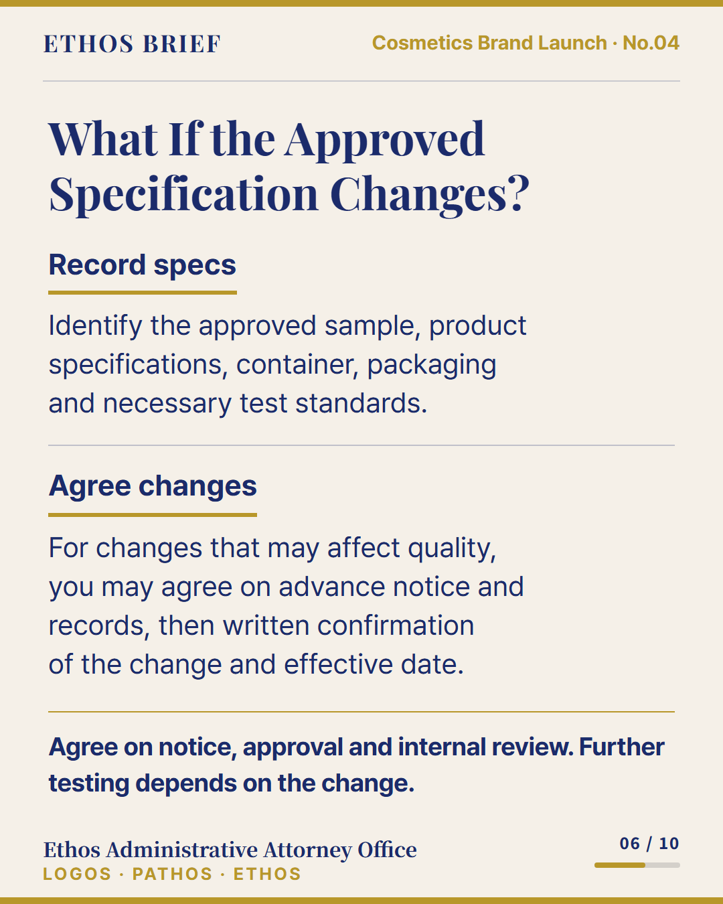
최신 CARD-FLOW 영문 초안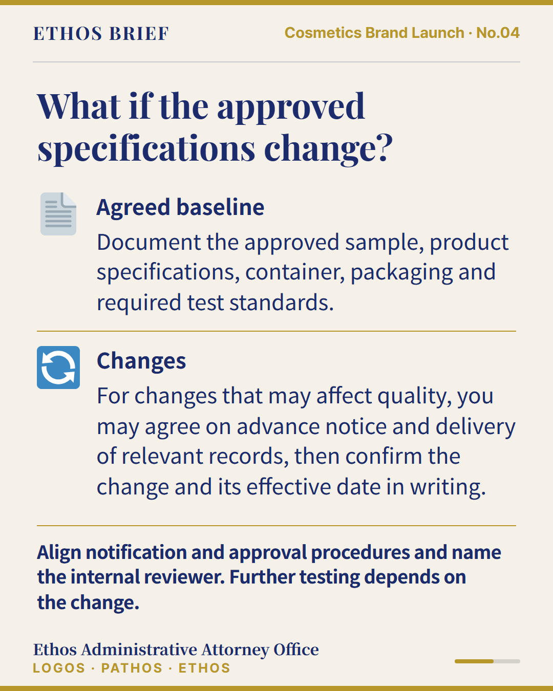
최신 국문과 문구 대조
| 국문 기준 | 영문 현지화 |
|---|
| 샘플 승인 뒤 사양이 달라진다면 | What if the approved specifications change? |
| 통보·승인 절차와 내부 확인 담당자를 맞추세요. 추가 시험 여부는 변경 내용에 따라 달라집니다. | Align notification and approval procedures and name the internal reviewer. Further testing depends on the change. |
| 기준 문서 | Agreed baseline |
| 승인 샘플, 제품 사양, 용기·포장과 필요한 시험 기준을 문서로 특정합니다. | Document the approved sample, product specifications, container, packaging and required test standards. |
| 변경 약정 | Changes |
| 품질에 영향을 줄 수 있는 변경은 미리 알리고 자료를 전달한 뒤, 내용과 적용 시점을 서면 확인하도록 약정할 수 있습니다. | For changes that may affect quality, you may agree on advance notice and delivery of relevant records, then confirm the change and its effective date in writing. |

Card 7 · Sharing quality records
구성도 최신 국문에 맞춰 변경했습니다. 이전과 같은 문구의 디자인만 비교하는 장이 아닙니다.
기존 영문 READABILITY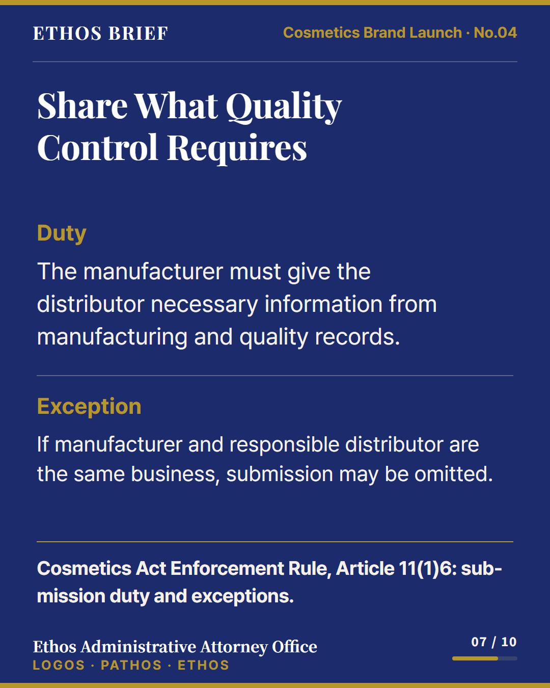
최신 CARD-FLOW 영문 초안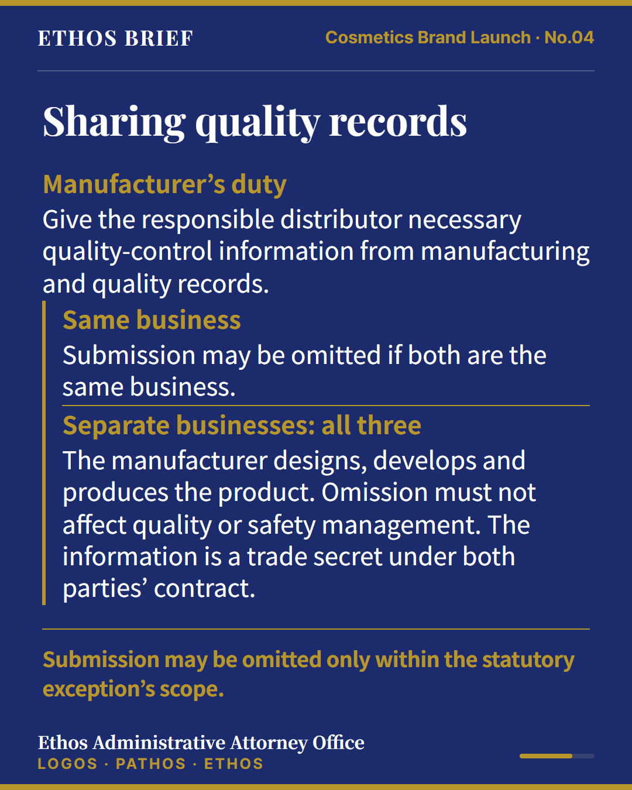
최신 국문과 문구 대조
| 국문 기준 | 영문 현지화 |
|---|
| 품질자료 제출, 원칙과 예외를 구분하세요 | Sharing quality records |
| 법정 예외에 해당하는 범위에서 제출하지 않을 수 있습니다. | Submission may be omitted only within the statutory exception’s scope. |
| 제출 원칙 | Manufacturer’s duty |
| 제조업자는 제조·품질관리 문서 중 품질관리에 필요한 사항을 책임판매업자에게 제출합니다. | Give the responsible distributor necessary quality-control information from manufacturing and quality records. |
| 동일 사업자 | Same business |
| 제조업자와 책임판매업자가 동일하면 제출하지 않을 수 있습니다. | Submission may be omitted if both are the same business. |
| 별개 사업자: 세 조건 모두 | Separate businesses: all three |
| 제조업자가 제품을 설계하고 개발해 생산하는 방식이어야 합니다. 품질·안전관리에 영향이 없고 양측 계약상 영업비밀인 범위여야 합니다. | The manufacturer designs, develops and produces the product. Omission must not affect quality or safety management. The information is a trade secret under both parties’ contract. |
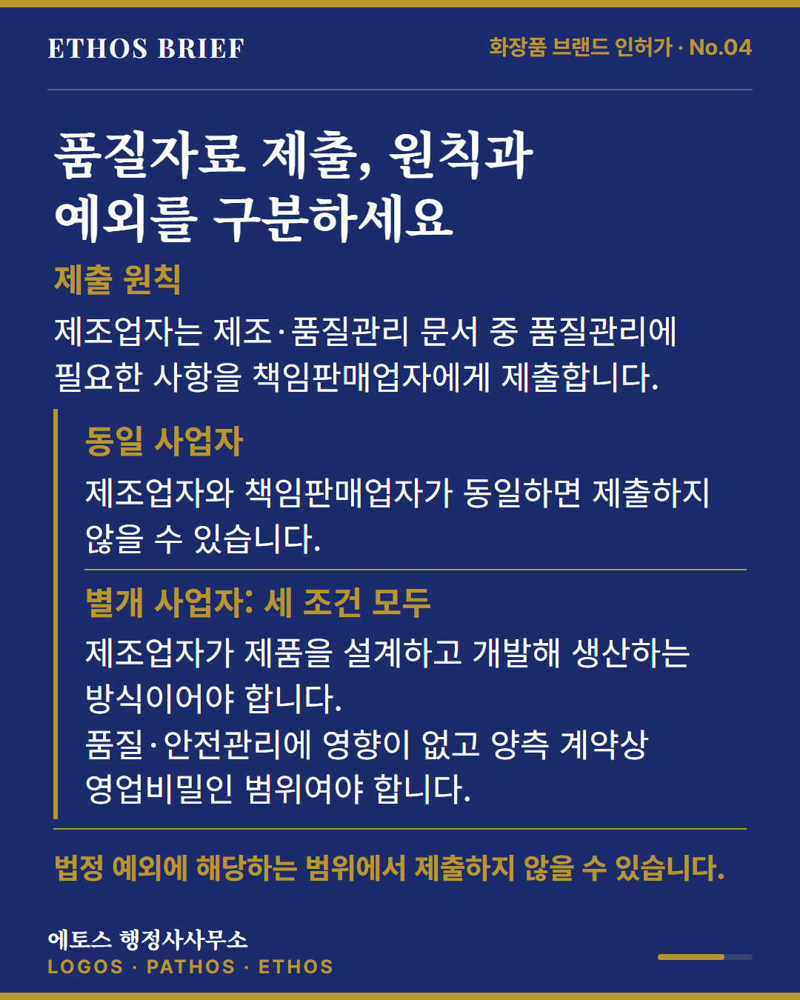
Card 8 · Separate businesses: meet all three conditions
기존 영문 READABILITY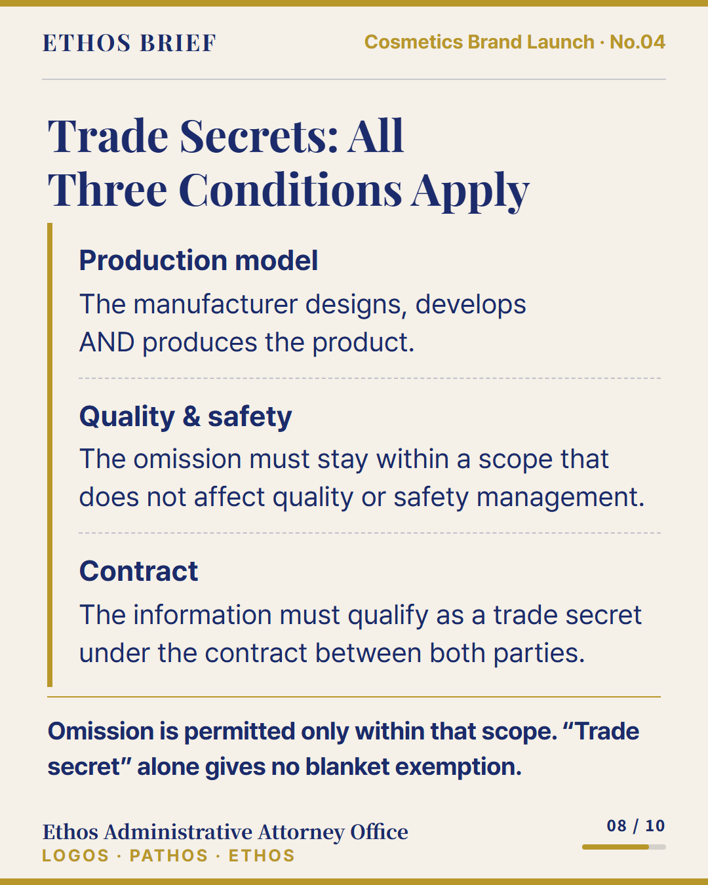
최신 CARD-FLOW 영문 초안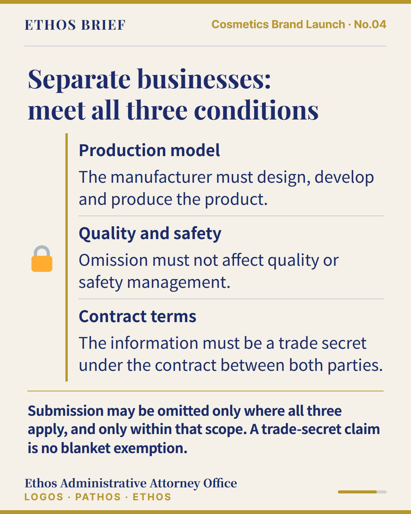
최신 국문과 문구 대조
| 국문 기준 | 영문 현지화 |
|---|
| 별개 사업자, 영업비밀 예외는 세 조건 모두 | Separate businesses: meet all three conditions |
| 모두 충족한 범위에서 제출하지 않을 수 있습니다. 영업비밀이라는 말만으로 일괄 제외되지는 않습니다. | Submission may be omitted only where all three apply, and only within that scope. A trade-secret claim is no blanket exemption. |
| 제조 방식 | Production model |
| 제조업체가 제품을 설계하고 개발해 생산하는 방식이어야 합니다. | The manufacturer must design, develop and produce the product. |
| 영향 범위 | Quality and safety |
| 품질·안전관리에 영향을 미치지 않는 범위여야 합니다. | Omission must not affect quality or safety management. |
| 계약 내용 | Contract terms |
| 양측 계약에서 영업비밀로 정한 내용이어야 합니다. | The information must be a trade secret under the contract between both parties. |
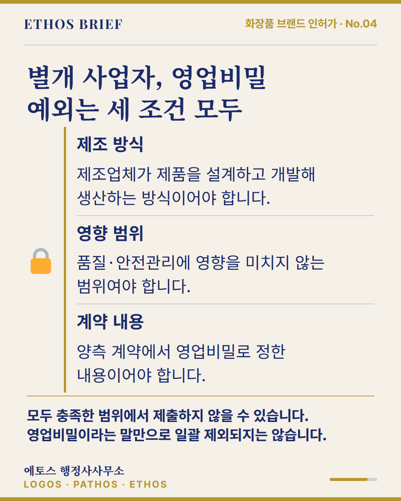
Card 9 · Compare three documents before signing
구성도 최신 국문에 맞춰 변경했습니다. 이전과 같은 문구의 디자인만 비교하는 장이 아닙니다.
기존 영문 READABILITY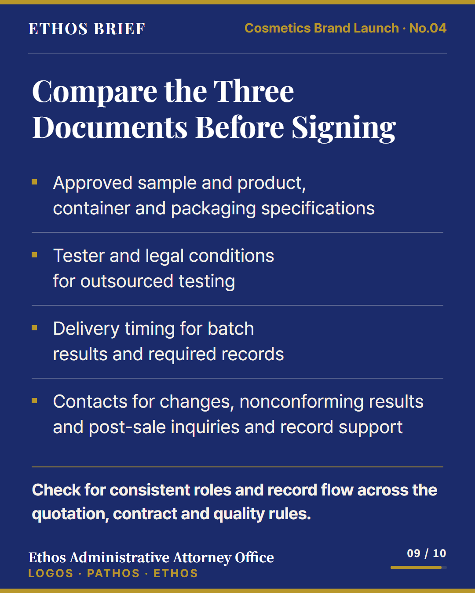
최신 CARD-FLOW 영문 초안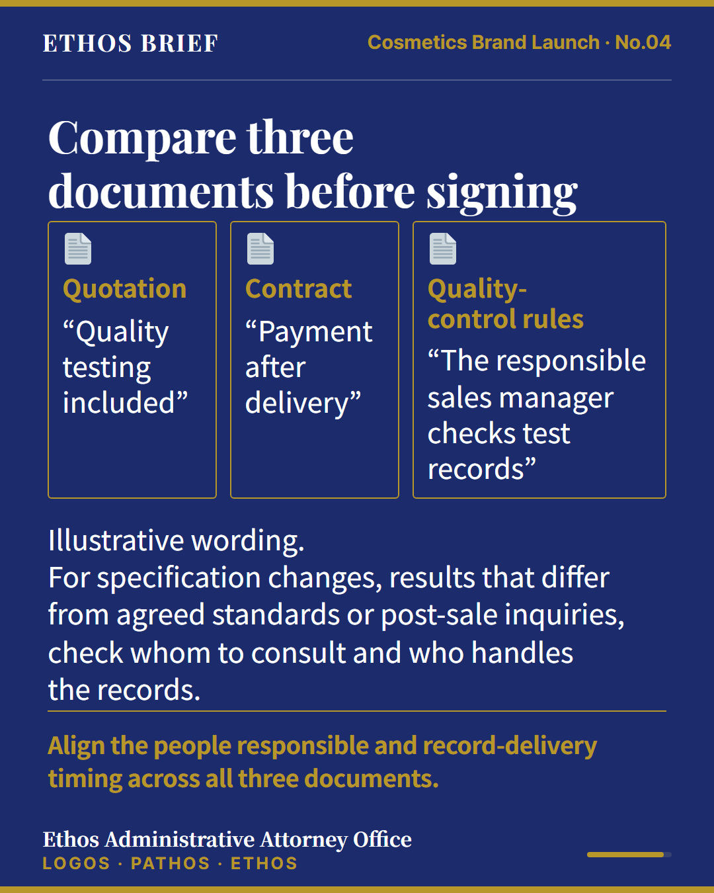
최신 국문과 문구 대조
| 국문 기준 | 영문 현지화 |
|---|
| 계약 전, 세 문서를 나란히 놓아보세요 | Compare three documents before signing |
| 위 문구는 원문의 예시입니다. 사양이 변경되거나 검사결과가 맞지 않을 때, 판매 후 문의가 생겼을 때 누구와 협의하고 누가 자료를 맡는지도 확인합니다. | Illustrative wording. For specification changes, results that differ from agreed standards or post-sale inquiries, check whom to consult and who handles the records. |
| 세 문서의 담당자와 자료 전달 시점을 맞추세요. | Align the people responsible and record-delivery timing across all three documents. |
| 견적서 | Quotation |
| ‘품질검사 포함’ | “Quality testing included” |
| 계약서 | Contract |
| ‘납품 후 대금 지급’ | “Payment after delivery” |
| 품질관리규정 | Quality-control rules |
| ‘책임판매관리자가 검사자료를 확인’ | “The responsible sales manager checks test records” |
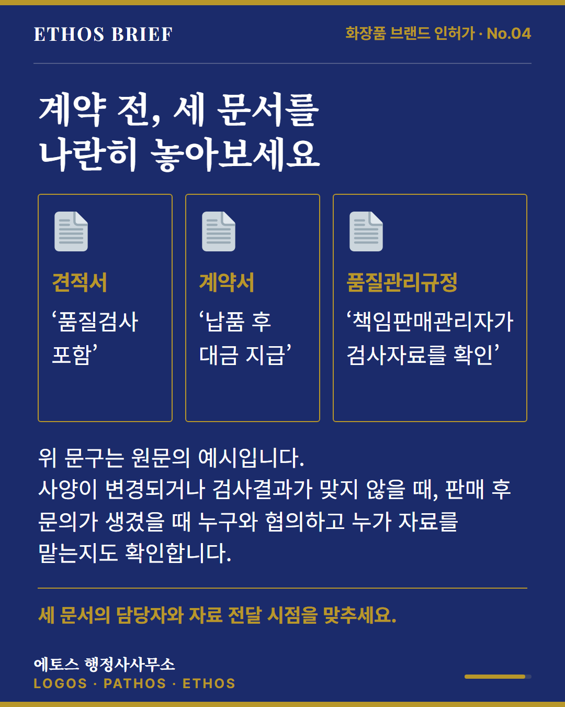
Card 10 · Before signing, start with what you have
기존 영문 READABILITY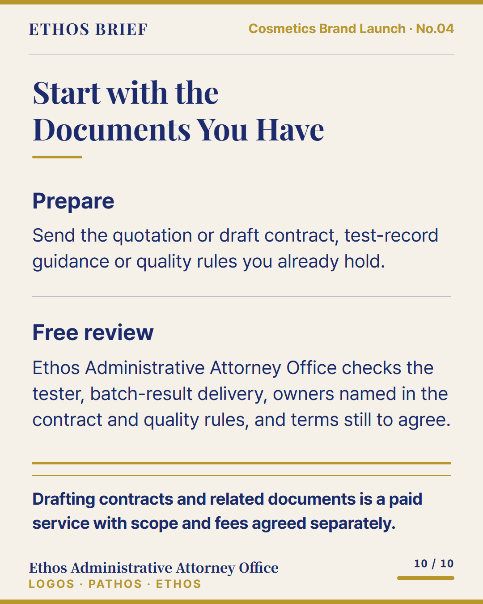
최신 CARD-FLOW 영문 초안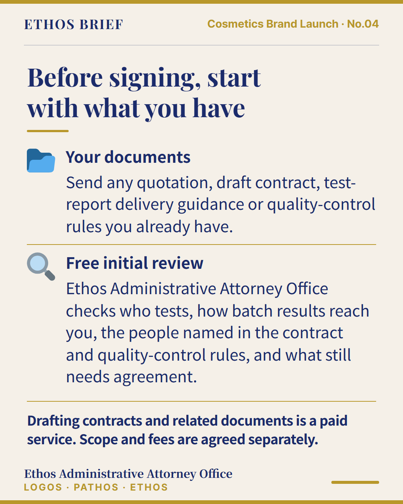
최신 국문과 문구 대조
| 국문 기준 | 영문 현지화 |
|---|
| 서명 전, 보유한 자료로 먼저 확인하세요 | Before signing, start with what you have |
| 계약서·관련 문서 작성은 범위와 비용을 따로 정하는 유료 서비스입니다. | Drafting contracts and related documents is a paid service. Scope and fees are agreed separately. |
| 지금 가진 자료 | Your documents |
| 견적서나 계약서 초안, 시험성적서 제공 안내, 품질관리규정 중 보유한 자료를 보내주세요. | Send any quotation, draft contract, test-report delivery guidance or quality-control rules you already have. |
| 무료 사전 검토 | Free initial review |
| 에토스 행정사사무소가 검사 담당자와 제조번호별 결과 전달 방식, 계약서와 관리규정의 담당자, 추가 합의할 내용을 살펴봅니다. | Ethos Administrative Attorney Office checks who tests, how batch results reach you, the people named in the contract and quality-control rules, and what still needs agreement. |

검수 결과 · 법률 조건 대조 · 자산 출처
Emoji graphics: Twemoji © Twitter and contributors, CC BY 4.0. Lucide ISC/MIT.